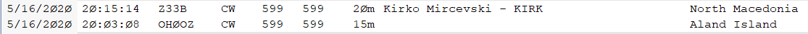

Wow! Seems later than I would have expected
Al
From: Chat <chat-bounces@ncdxc.org> On Behalf Of Rick NK7I via Chat
Sent: Saturday, May 16, 2020 2:58 PM
To: chat@ncdxc.org
Subject: Re: [NCDXC Chat] spill over
Life at last!
From this morning (Pac time):
.

Rick NK7I
On 5/16/2020 2:25 PM, Jim Sansoterra via Chat wrote:
Looking at the A and K numbers it shouldn't be long before cw and ssb come alive on 17 and 20
_______________________________________________
Chat mailing list
Chat@ncdxc.org
http://mail.ncdxc.org/mailman/listinfo/chat_ncdxc.org